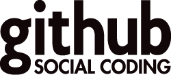
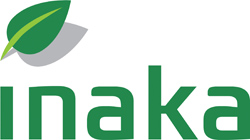

Hola Chicas!
Rails Girls tangoes its way to Buenos Aires: join the free, two-day crash-course to the exciting world of building web applications with Ruby on Rails, with a South American flavor.
Bienvenidas to the Rails fiesta: apply now!
Rails Girls gives tools for girls and women to build dreams and ideas.
You learn designing, prototyping and coding with the help of our coaches.
Want to help? We are looking for volunteers, sponsors and Rails coaches. Email us.
| 18.00 - |
Installation partyGet know the attendees a little bit before hand. Bring your laptop if you can, so we can install Ruby on Rails for you. |
|---|
| 9:00 - 10:00 |
Registration, coffee and installation festDuring the morning we’ll install Ruby on Rails on your computer, if there has been problems before. |
|---|---|
| 10:00 - 18:00 |
WorkshopJumpstart your first web application. We'll have short lightning talks, exercises and hands-on coding. Check out the programs from Singapore, Shanghai and Helsinki while we're busy preparing the Buenos Aires edition. |
| 18.30 |
After drinksVenue TBA |
Applications close: June 1st
Acceptances informed: June 3rd
Rails Girls Buenos Aires is co-organized with our awesome partners.
Want to help? We're looking for partners and sponsors! Shoot us an e-mail at anni.rautio (at) gmail.com.
« Download the A4 for sponsors (PDF, 0.52Mb)
Githubis version control for software development and so much more. Whether it's a weekend side project, your favorite open source library, a startup destined for glory, or your company's app, GitHub helps everyone work together with tools for easier collaboration and more visibility. Check it out — open source is free!
Aycron IT provides cutting-edge technological software solutions and reaches from Argentina out to the world.
Universidad de Palermo is a leading university in Buenos Aires, Argentina, with a vibrant community of 1200+ Faculty and Scholars, and students from over 51 countries.
Engine Yard is the leading cloud platform for Ruby on Rails and PHP. Thousands of customers in 58 countries, from explosive-growth Web startups to Fortune 500 enterprises, rely on Engine Yard.
Ellas 2.0es una plataforma que tiene como objetivo impulsar a las mujeres en la creación de negocios de base tecnológica en comunidades de habla hispana. Nuestra misión es ser catalizadoras del cambio social, movilizando, dotando de visibilidad, inspirando, educando y conectando a una nueva generación de emprendedoras que lideren proyectos innovadores, globales, escalables y con alto potencial de crecimiento.
Three Pillar Global is a trusted partner in software product development that supports efficiency in today’s expanding mobile environment.
 Inaka builds Ruby on Rails Websites and iPhone and iPad Apps, specializing in user-focused design.
Is this going to be in english? Nope, most of the event and speeches are going to be done in spanish! The local coaches are native speakers. However, some of the inspirational talks as well as instructions might be in english.
How much does the workshop cost? Nothing, it's free! You just need to be excited!
Who is this aimed for? Women of any age with basic knowledge of working with a computer. We’ve had people of all ages taking part. Most of the program is run in spanish and please bring your laptop.
Can men attend? Yes, but you need to be accompanied by an interested lady. Also, girls are given a priority.
I know how to program - How can I help? We’re also looking for people to be coaches. We’ll have a two-three hour workshop before the event to walk you through the curriculum. Email us